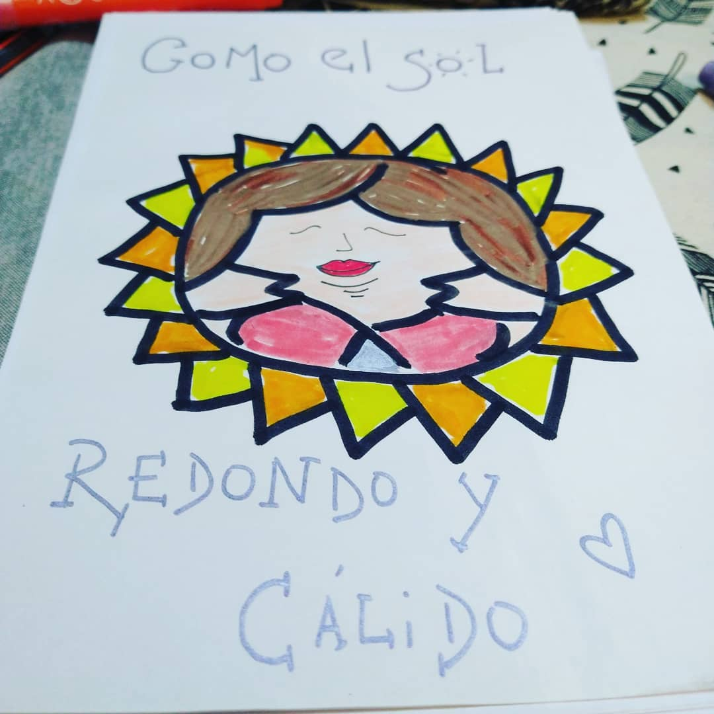

BODY POSITIVE! Ahí las tenés a las grandes marcas haciéndose los inclusivos concampañas de “cuerpos reales” para después no cumplir con la ley de talles, o para venderte una crema anti-age, reductora, etc. No critico la visualización de la diversidad de cuerpos! Gran paso, pero me queda con gustoa poco… Mientras no nos reconozcan como sujetos de deseo no me sirve dicha visualización que reconoce que “estamos” pero para modificarnos. Me molesta la historia heróica del gorde que triunfa cuando adelgaza superando su “vida gorde de mierda” o las noticias del gorde que “inspira al esfuerzo” por adelgazar y ahí nomás alcanza la felicidad! El estereotipo del gorde torpe, amorosx, timidx, etc. ya no va. No sigamos siendo parte de la excepción, seamos la regla gorde y a partir de ese momento el concepto “body positive” vaa tener sentido al 100%. Ver menos